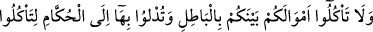
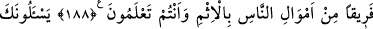
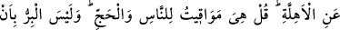
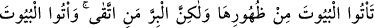
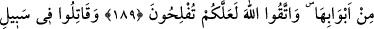
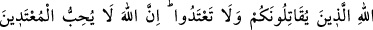
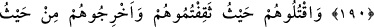
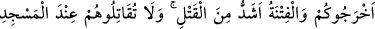
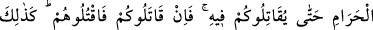
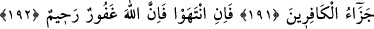
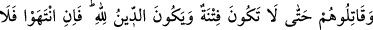
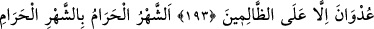
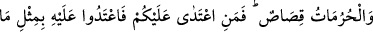
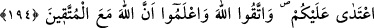
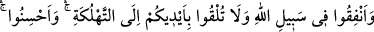
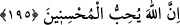
CİHAD
188. Mallarınızı aranızda haksız sebeblerle yemeyin. Kendiniz bilip dururken,
insanların mallarından bir kısmını haram yollardan yemeniz için o malları hakimlere
(idârecilere veya mahkeme hakimlerine) vermeyin.
189. Sana, hilâl şeklinde yeni doğan ayları sorarlar. De ki: Onlar, insanlar ve
özellikle hac için vakit ölçüleridir. İyi davranış, asla evlere arkalarından gelip
girmeniz değildir. Lâkin iyi davranış, korunan (ve ölçülü giden) kimsenin
davranışıdır. Evlere kapılarından girin Allah’dan korkun, umulur ki kurtuluşa
erersiniz.
190. Size karşı savaş açanlara, siz de Allah yolunda savaş açın. Sakın aşırı
gitmeyin, çünkü Allah aşırıları sevmez.
191. Onları (size karşı savaşanları) yakaladığınız yerde öldürün. Sizi çıkardıkları
yerden siz de onları çıkarın. Fitne, adam öldürmekten daha kötüdür. Mescid-i